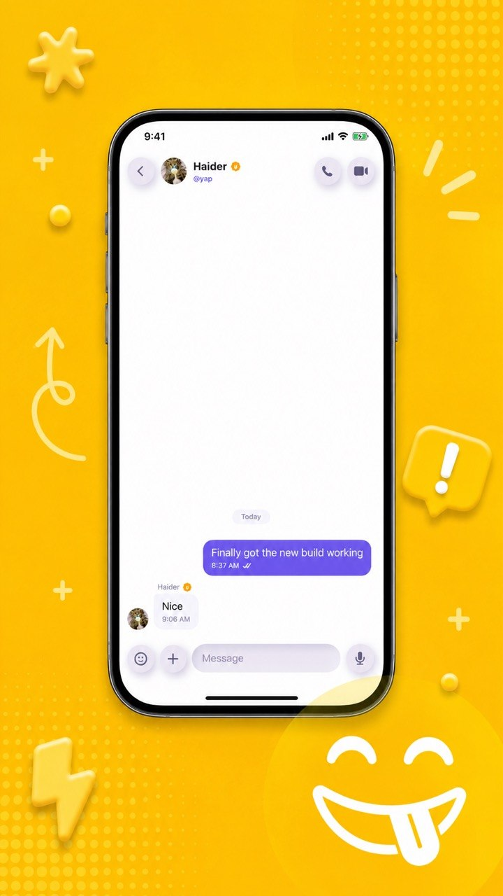
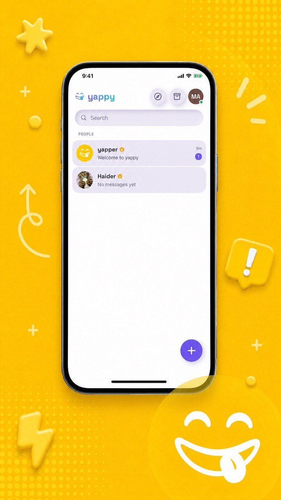
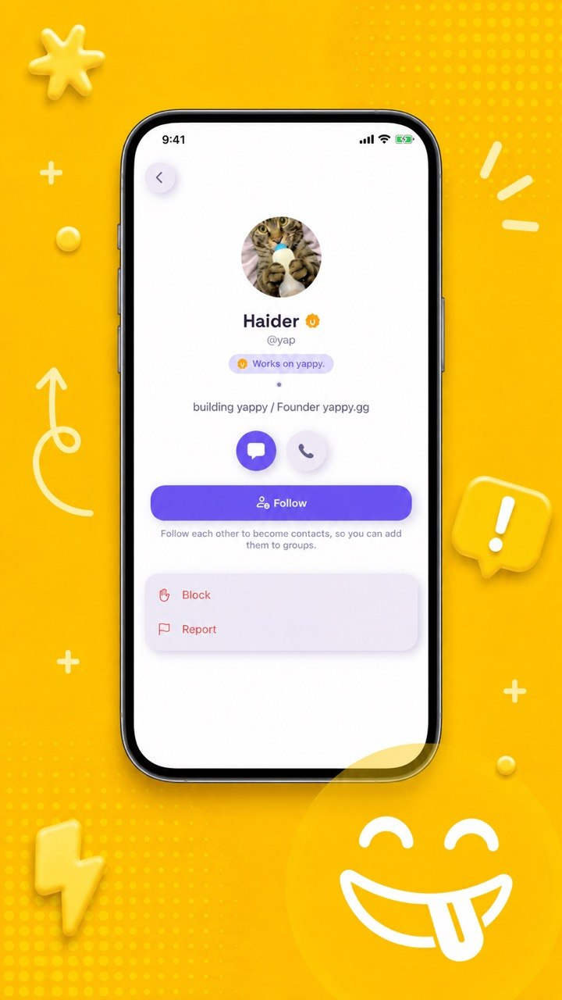

Every chat app you have was built for an office or an audience. yappy is built for your people: loud, cozy, a little unhinged, and entirely yours.
Free. No ads. No phone number required.

Hold the mic and yappy draws the actual waveform of what you said, so everyone can see the rant coming before they press play. Flip to the camera for a round video note when your face is the message.
And when typing is too slow, call. yappy rings like a real phone: lock screen, system UI, the whole thing, even with the app closed.


Follow each other and you're contacts. You decide who can message you, add you to groups, or see when you were last online. Quiet hours hold the noise until morning.
Groups grow up too. Turn one into a space with channels when one room stops being enough, and the members, roles and invite links all come along.
Every account starts with a DM from @yapper. It builds sticker packs out of images you send it, renames you, answers /help, and tells you honestly whether the servers are having a day.
It is also the same bot API anyone can build on. If @yapper can do it, your bot can too.
Everything below ships today. No waitlist asterisks.
The bubble draws the real waveform of what you said. Everyone can see the rant coming.
A little circle of your face, straight from the camera. The thumbnail is the first frame, so you know what you're opening.
Voice calls ring on the lock screen with the app closed. Answer, decline and mute right there.
Ask @yapper for a pack made from your own images. Stickers send bare, no bubble around them.
Groups become places with rooms. Announcement channels, roles, slow mode, and invites that can expire.
Nothing makes a sound between the hours you pick. Notifications still arrive, they just wait their turn.
Token auth, slash commands, buttons and webhooks. The quickstart gets you from zero to a bot in a group in about fifteen minutes.